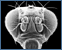
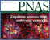
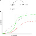
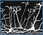
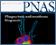
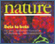
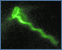
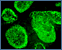
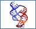
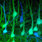

News Archives: Nov 1, 2003 - Jan 6, 2017
44 stories listed.
|
Andy McMahon Receives Javits Award
- Dec. 22, 2004
The award recognizes ten years of peer reviewed, NINS-funded research ... Tags: 2004, Andrew McMahon , Javits Award, awards |
|
|
High School Teachers Develop Immunology Materials
- Dec. 16, 2004
Focusing this year on immunology and infectious disease, the third ... Tags: MCB Outreach Program, 2004 |
|
|  |
FlyBase: Sharing the Drosophila Genome
- Dec. 14, 2004
Research with fruit flies, particularly a species known as Drosophila ... Tags: 2004, FlyBase, William Gelbart |
|
Setting Up the Francis Lab
- Nov. 29, 2004
The metamorphosis from postdoc to principal investigator is one of ... Tags: 2004, Nicole Francis, profile |
|
|
Erin O'Shea to Join MCB Faculty
- Nov. 18, 2004
Erin O'Shea, an internationally renowned cell and systems biologist ... Tags: 2004, Erin O'Shea |
|
|
Axon Branch Removal at Developing Synapses by Axosome Shedding
- Nov. 18, 2004
This work (Neuron 2004, 44:651-661) decides a question that ... Tags: 2004, Jeff Lichtman, Neuron, publication |
|
|
Tom Maniatis: Gene Expression, Cloning and Beyond
- Nov. 16, 2004
It was July 1976 and Tom Maniatis—long-haired and Birkenstocked ... Tags: 2004, Tom Maniatis, profile |
|
 |
Alex Schier to Join MCB Faculty
- Oct. 29, 2004
We are very pleased to announce that Alex Schier has ... Tags: 2004, Alexander Schier |
|
A Weekend on the Cape: Science, Sports and a Clambake
- Oct. 27, 2004
Nearly everything about MCB’s 2004 Research Retreat was new ... Tags: 2004, MCB Research Retreat |
|
|
"The Great Brain Debate", a new book by John Dowling
- Oct. 25, 2004
How much of our behavior is determined by our genes ... Tags: 2004, John Dowling, book |
|
|
Meselson Wins Lasker Award
- Oct. 12, 2004
Matthew Meselson, a Harvard molecular biologist whose famous experiment substantiated ... Tags: 2004, Lasker Award, Matthew Meselson, awards |
|
|
Biology Goes to the Movies
- Sept. 21, 2004
Writer-director Cheryl Vaughan sits at the lab bench, fine tuning ... Tags: 2004, undergraduate education |
|
|
Genomic Analysis of Sporulation in Bacillus Subtilis
- Sept. 21, 2004
A fundamental challenge in the field of development is to ... Tags: 2004, PLoS Biology, Richard Losick, publication |
|
|
Symposium to Honor Howard Berg
- Sept. 20, 2004
In order to honor the scientific career of Howard C ... Tags: 2004, Howard Berg, symposium |
|
|
High School Teachers Create Multimedia Teaching Tools
- Sept. 17, 2004
The MCB-HHMI Outreach Program, cosponsored by the department and the ... Tags: MCB Outreach Program, 2004 |
|
|  |
Do Chromosomes Work through Stress?
- Aug. 25, 2004
A paper in the August 24 issue of Proceedings of ... Tags: 2004, Nancy Kleckner, Proceedings of the National Academy of Sciences, publication |
|  |
Mathematical Models of Robustness in Development
- Aug. 12, 2004
A paper by Nicholas Ingolia in the June 15, 2004 ... Tags: 2004, Andrew Murray, Proceedings of the National Academy of Sciences, publication |
|  |
Completing the Circuit at the Center for Brain Science
- Aug. 12, 2004
Harvard University launches the Center for Brain Science, with MCB ... Tags: 2004, Center for Brain Science, Joshua Sanes |
 |
Andrew Murray New MCB Chair
- Aug. 6, 2004
As a scientist, Andrew Murray, Professor of Molecular and Cellular ... Tags: 2004, Andrew Murray, MCB Chair |
 |
Finding a Presynaptic Organizer That Makes the Brain Functional
- July 22, 2004
Neurons analyze and transmit information in the brain. Information is ... Tags: 2004, Cell, Joshua Sanes, publication |
|  |
Straight Talk on a Slippery Subject
- July 22, 2004
To Axel Nohturfft of Harvard’s Department of Molecular and ... Tags: 2004, Axel Nohturfft, profile |
|
Jack Strominger Receives 2004 ASBMB-Merck Award
- July 16, 2004
Jack L. Strominger, Higgins Professor of Biochemistry in MCB, is ... Tags: 2004, ASBMB-Merck Award, Jack Strominger, awards |
|
|
Teaching Tomorrow's Biology Today
- June 16, 2004
Bio Sci 50 and MCB 100 are not your father ... Tags: 2004, Robert Lue, undergraduate education |
|
|
New Light on Crossover Differentiation
- June 16, 2004
A paper just published from the Kleckner lab in Cell ... Tags: 2004, Cell, Nancy Kleckner, publication |
|
 |
Matthew Michael Promoted to Associate Professor
- June 7, 2004
Matthew Michael has been named Associate Professor of Molecular and ... Tags: 2004, Matthew Michael |
|
Doug Melton to Lead Life Sciences Council
- June 7, 2004
In his role as Chair of the Faculty of Arts ... Tags: 2004, Douglas Melton, Life Sciences Council |
|
|
Development Study Finds Potential Signaling Code for Certain Facial Features
- May 27, 2004
Researchers in the lab of MCB department chair Andrew McMahon ... Tags: 2004, Andrew McMahon , Genes and Development , publication |
|
|
Merck Genome-Related Research Awards Announced
- May 24, 2004
"We at Merck are happy and proud to be associated ... Tags: 2004, Andrew McMahon , Axel Nohturfft, Merck Genome-Related Research Awards, Venkatesh Murthy, awards |
|
|
Rachelle Gaudet Recipient of 2004 McKnight Scholar Award
- May 20, 2004
Rachelle Gaudet, Assistant Professor at Harvard University in the Department ... Tags: 2004, McKnight Scholar Award, Rachelle Gaudet, awards |
|
|
Catherine Dulac Elected to Membership in the American Academy of Arts and Sciences
- May 12, 2004
Citing her outstanding research on the identity of essential signaling ... Tags: 2004, American Academy of Arts and Sciences, Catherine Dulac, awards |
|
|  |
The In Vivo Contribution of Adult Stem Cells to Organ Maintenance and Repair
- May 7, 2004
A paper from the Melton group (Dor, Brown, Martinez, and ... Tags: 2004, Douglas Melton, Nature, publication |
|  |
Howard Berg: Studies on E. Coli in Motion
- May 6, 2004
The Bacterial Movie Theater of Professor Howard Berg shows nothing ... Tags: 2004, Howard Berg, motion studies |
|  |
Stem Cell Institute Holds Inaugural Symposium
- May 3, 2004
A new institute designed to advance stem cell research held ... Tags: 2004, Douglas Melton, Stem Cell Institute, symposium |
|  |
Bloch Lecture Looks to Evolutionary Past and Biomedical Future
- May 3, 2004
"Understanding how RNA molecules carry out chemical reactions may help ... Tags: 2004, Bloch Lecture, lecture |
|
Harvard University Announces New Stem Cell Institute
- April 23, 2004
A new center established to advance stem-cell research was announced ... Tags: 2004, Douglas Melton, Stem Cell Institute |
|
|
Thomas Jessell to give Prather Lectures April 21, 22, 23
- April 20, 2004
The annual John M. Prather Lectures in Biology will showcase ... Tags: 2004, Prather Lectures, lecture |
|
|
Collaboration Is Key to Stem Cell Line Development
- April 15, 2004
The story of how the new cells were derived is ... Tags: 2004, Andrew McMahon , Douglas Melton, New England Journal of Medicine |
|
|
Craig Hunter Receives Tenure
- April 14, 2004
Craig Hunter has been named a Professor of Molecular and ... Tags: 2004, Craig Hunter, profile |
|
|
April 17 Symposium to Showcase Microbial World's Rich Diversity
- April 14, 2004
The field of microbiology, pulsing with new excitement, has become ... Tags: 2004, Microbial Sciences Initiative at Harvard, Microbial Sciences Symposium, symposium |
|
|
First Jeffries Wyman Fellow Selected
- April 7, 2004
Xiangshu Jin, a postdoctoral fellow in the laboratory of Rachelle ... Tags: 2004, Jeffries Wyman Fellowship, awards |
|
|  |
Sanes and Lichtman Bring Unique Synergism to MCB and to Center for Brain Science
- April 6, 2004
Joshua R. Sanes (left) and Jeff W. Lichtman (right), senior ... Tags: 2004, Center for Brain Science, Jeff Lichtman, Joshua Sanes |
|
Doug Melton Releases New Stem Cell Lines
- April 2, 2004
MCB Professor Doug Melton has produced 17 new human embryonic ... Tags: 2004, Douglas Melton, New England Journal of Medicine |
|
|
High School Students Experience "Discovery Biology" Firsthand
- April 1, 2004
Nearly 500 high school biology students are participating in the ... Tags: MCB Outreach Program, 2004, Robert Lue |
|
 |
Lawrence Bogorad Passes Away
- Jan. 8, 2004
Lawrence Bogorad, Maria Moors Cabot professor of biology emeritus, died ... Tags: 2004, Lawrence Bogorad, Professor Emeritus |